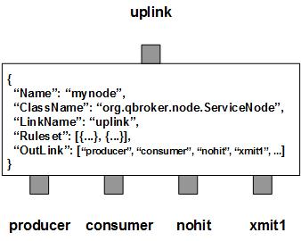

ServiceNode listens to an input XQ for JMS ObjectMessages with a connected socket as a request to establish a connection. The incoming message is also called a handshake message. It contains the information about the request, the client and the connection. ServiceNode matches the properties against the predefined rulesets to determine which ruleset to handle the connection request. ServiceNode extracts the URI from the handshake message and looks it up in the cache for an XQueue as the transmit queue established for the connection. If there is an XQueue in the cache, it means that the service is ready. Hence ServiceNode will just check out a thread to handle the connection on the XQueue. Otherwise, ServiceNode will generate a new request with a newly created XQueue for either a new consumer or a new producer to serve on the connection. The request will be sent to the right outlink according to the ruleset.
ServiceNode has two types of outlinks, position-fixed and non-fixed. There are three position-fixed outlinks: producer for all requests to a ReceiverPool, consumer for all requests to a PersisterPool, nohit for all requests not covered by any rulesets. The non-fixed outlinks are for the dynamic destinations or sources.
ServiceNode also contains a number of predefined rulesets. These rulesets categorize messages into non-overlapping groups. Therefore, each ruleset defines a unique message group. The ruleset also specifies the way to construct the URI and properties for the new Persisters or receivers. For those messages falling off all defined rulesets, ServiceNode always creates an extra ruleset, nohit, to gather stats on them. Currently, all the nohit messages will not be routed to the nohit outlink. Instead, they will be removed at once by ServiceNode. The stats of pending messages will be tracked by RULE_PEND for each ruleset.
If the XQueue does not exist and the ruleset is up to the consumer pool, ServiceNode will create a new ObjectMessage as the request for a new persister thread. It will also create an XQueue and puts the XQueue and the URI into the request before sending it to consumer outlink. Once the persister is instantiated, ServiceNode will collect the response from the PersisterPool. The response contains the persister thread for delivering the messages to the specific destination. ServiceNode caches the thread and the id of the XQueue using the URI as the key. Then it starts the proxy thread to pipe all messages from the socket to the XQueue. This way, ServiceNode is able to deliver JMS messages to arbitrary destinations according to their URIs and the predefined rulesets dynamically.
If the XQueue does not exist and the ruleset is up to the producer pool, ServiceNode will create a new ObjectMessage as the request for a new receiver thread. It will also create an XQueue and puts the XQueue and the URI into the request before sending it to producer outlink. Once the receiver is instantiated, ServiceNode will collect the response from the ReceiverPool. The response contains the receiver thread for picking up the messages from the specific source. ServiceNode caches the thread and the id of the XQueue using the URI as the key. Then it starts the proxy thread to pipe all messages from the XQueue to the socket. This way, ServiceNode is able to pick up JMS messages from arbitrary sources according to their URIs and the predefined rulesets dynamically.
URI is used to identify destinations or sources. In order to construct the URI string for an arbitrary destination or source, each ruleset has to define a template with the name of URITemplate. Optinally, URISubstitution may be defined also for a simple substitution. With them, ServiceNode will be able to retrieve the URI string from the handshake message. A ruleset may also contain a map of DefaultProperty as static or dynamic properties for new persisters or new receivers. If the URI string is not in the cache, ServiceNode will try to resolve all the dynamic variables in the map of DefaultProperty from the handshake message first. Then it also adds the DefaultProperty to the new ObjectMessage for the either pools to create a new consumer or a new producer. If any of the operations fails, the handshake message will be removed and the socket will be closed as a failure.
For each new destination/source, ServiceNode uses the same Object message as the request containing the URI and the XQueue. The request is sent to either PersisterPool/ReceiverPool via the corresponding outlink. Then ServiceNode frequently checks the response for each outstanding requests. The response is supposed to have the status and the persister/receiver thread for the new destination/source. ServiceNode will use the thread to monitor its status. If the response has no such thread, ServiceNode will remove the incoming message and closes the socket. It will also remove the XQueue and the URI from the cache. The samething will happen if the request for a new persister or receiver times out. MaxRetry is used to control when to timeout the request on the pool. It also controls the timeout on a dead persister or receiver thread.
ServiceNode also maintains an active set of XQueues as the transmit queues for all destinations and sources. Behind each XQueue, there is at least one persister or receiver thread processing the messages. The messages may be stuck in the XQueue until they are processed, as long as the persister or receiver is not stopped. However, if there is no message in the queue, ServiceNode will mark it idle. All the transmit queues are monitored frequently in sessions. If one of them has been idle for over MaxIdleTime, its queue will be stopped. Its persister or receiver thread and the transmit queue will be removed from the cache. The associated socket will be closed too.
You are free to choose any names for the three fixed outlinks. But ServiceNode always assumes the first outlink for producer, the second for consumer and the third for nohit. The rest of the outlinks are for on-demand destinations or sources.
Apart from the common properties, there are three implementation specific properties for ServiceNode.
| Property Name | Data Type | Requirement | Description | Examples |
|---|---|---|---|---|
| Heartbeat | integer | optional | interval in sec to check outstanding requests | 30 (default: 60) |
| MaxNumberConnection | integer | optional | max number of connections | 32 (default: 256) |
| MaxRetry | integer | optional | max number of retries | 2 |
The proxy operation is executed via the pre-defined rulesets. Therefore, the configuration of the rulesets is critical to the operations of ServiceNode. Here are complete properties of rulesets for ServiceNode.
| Property Name | Data Type | Requirement | Description | Examples |
|---|---|---|---|---|
| Name | alphanumeric with no spaces | mandatory | name of the ruleset | event |
| PreferredOutLink | alphanumeric with no spaces | mandatory | name of the preferred outlink | producer |
| Operation | string | optional | name of the operation | respond |
| MaxIdleTime | integer | optional | max number of seconds of idle state | 900 |
| Capacity | integer | optional | max number of connections | 8 |
| MaxClient | integer | optional | max number of clients sharing the same transmit queue | 8 |
| MaxPublisher | integer | optional | max number of publisher | 8 |
| MaxRetry | integer | optional | max number of retries | 2 |
| TemplateFile | string | optional | full path to the filename containing template for publish operation | |
| Template | string | optional | template for publish operation | ##body## |
| URITemplate | list | optional | list of templates for new receivers or persisters | see example |
| URISubstitution | list | optional | list of subsctitutions for new receivers or persisters | see example |
| DefaultProperty | map | optional | default property map for new receivers or persisters | see example |
| FormatterArgument | list | optional | list of post format operations | see example |
| JMSPropertyGroup | list | optional | list of pattern groups on properties to select messages | see example |
| XJMSPropertyGroup | list | optional | list of pattern groups on properties to exclude messages | see example |
| PatternGroup | list | optional | list of pattern groups on body to select messages | see example |
| XPatternGroup | list | optional | list of pattern groups on body to exclude messages | see example |
| StringProperty | map | optional | for setting the user properties on the messages | see example |
Here is an example of ServiceNode:
{
"Name": "node_service",
"ClassName": "org.qbroker.node.ServiceNode",
"Description": "for services",
"Operation": "proxy",
"LinkName": "root",
"Capacity": "128",
"MaxNumberConnection": "64",
"DisplayMask": "0",
"XAMode": "1",
"Debug": "1",
"Ruleset": [{
"Name": "log",
"PreferredOutLink": "producer",
"Operation": "publish",
"Capacity": "64",
"XAMode": "0",
"MaxPublisher": "16",
"MaxIdleTime": "300",
"JMSPropertyGroup": [{
"uri": "^log:\\/\\/.*$"
}],
"URITemplate": "##uri##",
"DefaultProperty": {
"TimePattern": "##TimePattern##"
}
}],
"OutLink": ["producer", "consumer", "nohit"]
}